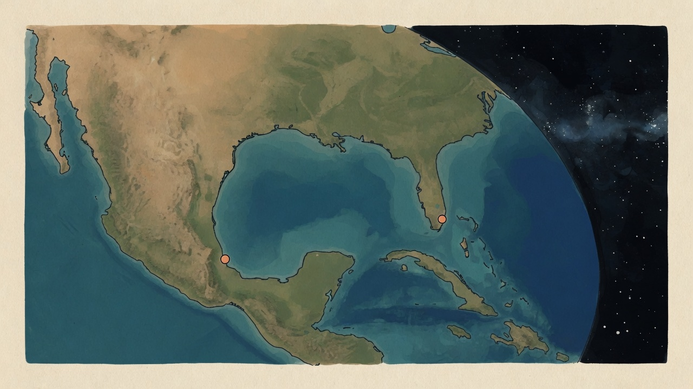
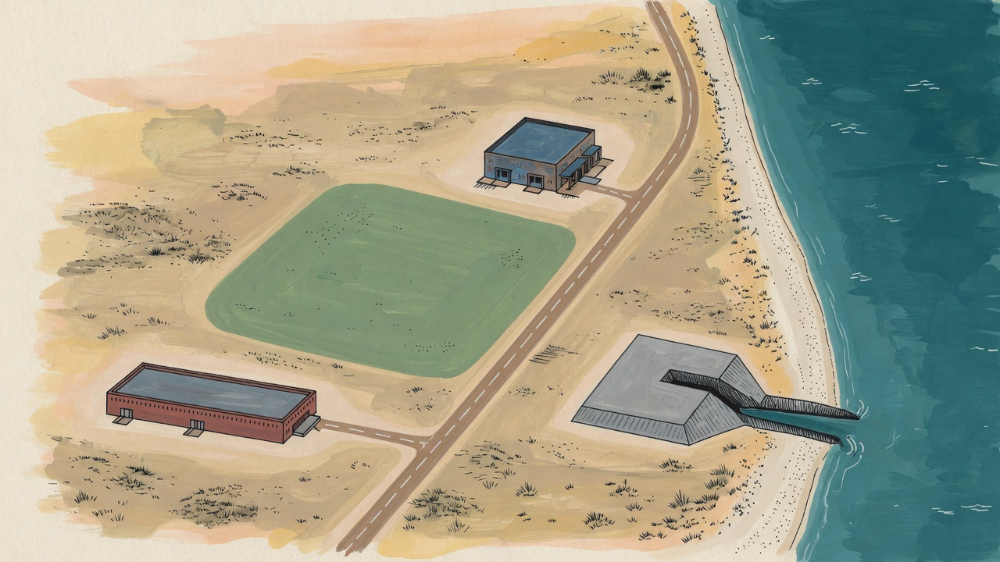
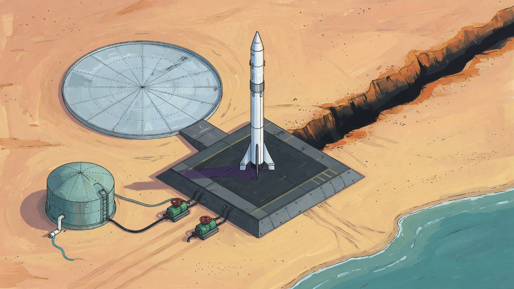
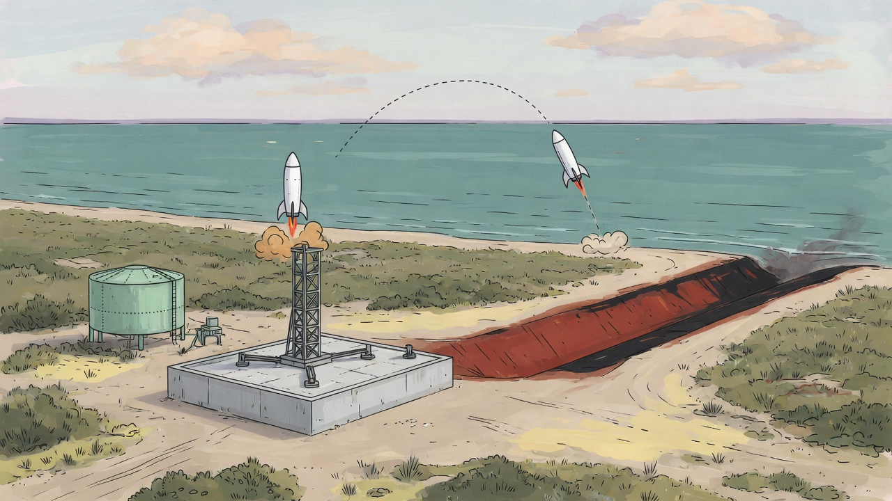
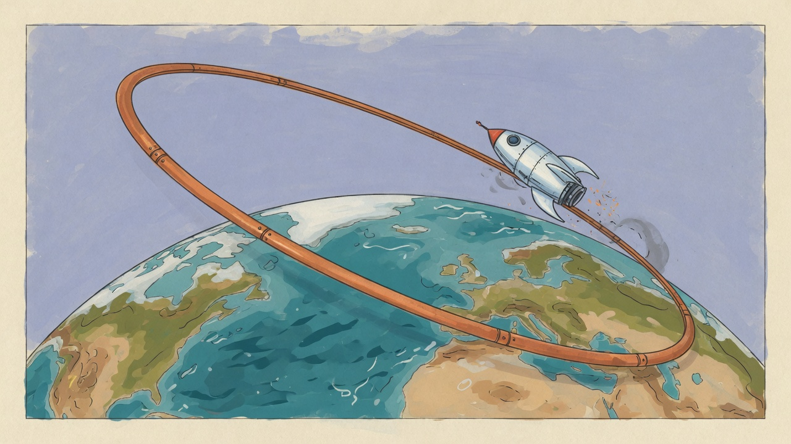

Overview
The center picture is hard to read. draw() fills one flat color, paints one water blob, and strokes three Texas rectangles. Buildings are boxes.
A rocket is a circle of radius 5 * cam.z. At the default cam.z of 1, that radius is 5 px.
The flight never appears on #map. openWatch() opens #watch. That overlay has a CSS sky and a plume div.
This design locks the picture and the desks before any more rules work. Three layers, in order: Field, Control, then Mechanics.
Mechanics stay out of the first pull requests. The field may show a flight only after evaluate() and applyFlight() have stored the result.
Background and motivation
#layout is a three-column grid. #buy is 250 px. #stage holds canvas #map. #insp is 320 px. A header sits above. #fleet sits below.
The camera is cam.x, cam.y, and cam.z. The wheel multiplies cam.z by 0.92 or 1.08. The clamp is 0.45–3.2. Drag pans.
deltaY > 0 zooms out today, because it multiplies cam.z by 0.92.
Parts draw only when cam.z > 1.45. They are 16×16 squares that ignore zoom. A name draws when cam.z > 1.7 and the pointer is on that building. A selected building also shows a name.
There is no globe, no real coast, no trajectory, and no orbit line. World units are not meters. DOCK anchors sit around 120–710. The Texas pad is [690, 320].
buildingCard() calls factoryCard() for every selected building. Factory jobs also appear when nothing is selected. The buy list already sells mains, not parts.
Acres appear only on the land cards in #buy, inside offerPlot(). The numbers are 455, 241, and 262. They are not painted on the canvas.
#stocks shows steel, RP-1, LOX, CH4, power, and depot tonnes. Keep the depot phrase.
evaluate() stores one alt, one speed, and one dv. It does not store a path. Static fire sets altitude 0 and speed 0. A hop sets speed to altitude times 40. An orbit attempt forces altitude 200 and speed to dv.
res.light is not "engines lit." A success leaves light false. A success walks every phase. A lit failure stops on Climb. A failure with no light stops on Countdown.
applyFlight() stores the result on S.flights. tick() returns while S.watch is set. Save and load strip watch.
What similar games do
These notes are lessons for the Field and the Control desks. They are not a request to copy another game. The pictures are original studies for this page. They are not screenshots.

Kerbal Space Program
The map is a second view of the same flight. It draws the projected path, altitude, speed, apoapsis, periapsis, other vessels, and an encounter with a sphere of influence. Most ship commands do not work on that map. A control opens the navball again and gives the ship back.
A maneuver node is a click on the orbit line, then six drag handles. The map shows the new path. The navball shows the burn marker, the delta-v, the burn time, and the time to the node. Only the next burn's numbers show. The burn is treated as instant, so the documented start is about half the burn time before the node.
Take the line and the next burn's numbers. Leave the six handles and the navball. This game already decides the flight before the picture plays.
Mars Horizon
Launch day is a watched check. The player aborts or continues. Success and failure both return to the solar-system screen, unless a success continues into Mission Control. That screen is separate. Objective stocks sit at the top left. Payload actions spend tokens. Choices lock when the turn ends. Auto-resolve can skip that screen.
On the main screen the planet stays in the middle. Research, Active Missions, Base, Diplomacy, and Spacepedia are the named regions. Funds and research sit at the top right. The base is its own screen. A 2019 walkthrough is the source for the button names, so a later build may have moved them.
Take the return to the world picture. Mission may replace the right desk. It should not become a second game that hides the coast.
Terra Invicta
Earth and the solar system are two camera targets. A control snaps to one or the other. On the globe, zooming in turns icons into models and can fill the view so the starfield hides. Orbit trails can be toggled. Close in, they draw above the surface. Zoomed out, they draw transfer paths.
Stations sit in named orbits. Only the low interface orbits pay a bonus back to nations. Those are the near-surface class, and they are the ones used to land or bombard. Higher orbits are a different layer. A click on a nation opens its detail beside the globe. The globe stays up.
Take two snap targets, and a detail pane that does not cover the field. No checked page lists exact zoom distances for borders or markers.
Dyson Sphere Program
A 2021 dev log sets a planet diameter at 400 m so a person can be 3 m tall and a building 2 to 30 m tall. Neighboring planets sit 20 to 80 diameters apart, so the next planet still looks like a planet. The checked pass did not find a zoom distance where buildings disappear. Planet view and the starmap read as separate modes, not one continuous zoom.
Take the published scale. Our World band is a readable disk. Our Work band is meters you can stand in. Do not claim that scroll alone hides the factory.
Factorio
In 2.0, remote view shows logistic coverage and turret range only when zoomed out, so those overlays stay off the close building picture. From 2.0.48, holding a turret shows its range even when zoomed in. The minimap draws only the chart. Remote view draws the real surface, then the chart on top.
Take the rule. Part names, ranges, and the orbit line appear at the band that needs them. They do not cover the pad when you are in close.
Spaceflight Simulator
The game has a physics view and a map view. The map shows the orbits of the objects in the world, and it zooms. No checked page says the predicted path is drawn inside the side-on flight camera. The map is the other view.
This design still draws the track on the field, because the field is the game. That is a choice. It is not a copy of the flight camera in Spaceflight Simulator.
What to keep
| From | Keep | Leave |
|---|---|---|
| Kerbal Space Program | A map draws the path, apoapsis, and periapsis. Only the next burn's numbers show. | Six maneuver handles and a navball. |
| Mars Horizon | Launch is watched, then the world picture returns. Mission control is optional. | A token-spending operations game. |
| Terra Invicta | Two snap targets. Detail opens beside the map. Only the near orbit talks to the ground. | A political globe and hab slots. |
| Dyson Sphere Program | Say the scale. A planet view and a star view can be different pictures. | A 400 m planet. |
| Factorio | Overlays show when zoomed out, or when the part is in hand. | A chart drawn instead of the coast. |
| Spaceflight Simulator | Orbits live on a map you can zoom. | A second physics view. Our track stays on the field. |




Desks, in the same frame
The columns do not move. Mission replaces the body of the right desk.
Goals and non-goals
Goals
- One camera. Scroll zooms. Drag pans. A trackpad pinch is the same wheel listener.
- Four meter bands that do not overlap, plus a Flight label while
S.watchis playing. - Land, borders, sites, buildings, rockets, trajectories, and orbits read as a place.
- Keep the current desks. Make them quieter. Do not add a dashboard.
- While a vehicle flies, the right desk body becomes Mission. The columns stay put.
- Remove
#watch. The field shows the rocket. After the clock stops, the last track stays.
Non-goals
- Do not retune fire rules, prices, or unlocks in these pull requests.
- Do not copy
starbase-builder/index.html. - Do not add a 3D scene.
- Art is drawn on the canvas. Generated images stay out of these pull requests.
- Do not add accounts, servers, or map tiles.
Proposed design
Work has three layers.
- Field is the world in the center. This is the game the player watches.
- Control is the desks around the field. Left column, right column, header, and fleet strip.
- Mechanics are the rules. Tanks, thrust, contracts, and unlocks stay as they are.
A flight picture uses the result those rules already stored. Mission is not a fourth layer. It is the right-hand desk while S.watch is set.
evaluate / applyFlight
| |
v v
S.watch clock flightView samples
| |
+----> #map <----+
|
+----> Mission inside #insp
Camera
cam.x and cam.y are meters. East is +x. North is +y. Screen Y grows downward, so north must flip.
function X(x) { return (x - cam.x) * cam.z + w / 2; }
function Y(y) { return (cam.y - y) * cam.z + h / 2; }
cam.z is pixels per meter, so meters per pixel are 1 / cam.z. Bands do not read cam.z. bandAt uses meters per pixel only.
function bandAt(mpp) {
if (mpp >= 8000) return "world";
if (mpp >= 600) return "region";
if (mpp >= 24) return "site";
return "work";
}
The cuts are 8,000, 600, and 24. A value lands in one band only. The clamp is 1.25 m/px through 40,000 m/px. Check the clamp in meters per pixel, then set cam.z = 1 / mpp.
| Band | Meters per pixel | cam.z (approximate, not a cut) |
|---|---|---|
| World | 8,000 to 40,000 | about 0.000025 to 0.000125 |
| Region | 600 up to but not including 8,000 | about 0.000125 to 0.001667 |
| Site | 24 up to but not including 600 | about 0.001667 to 0.041667 |
| Work | 1.25 up to but not including 24 | about 0.041667 to 0.8 |
The wheel and a ctrl-wheel pinch share the existing listener. It stays {passive:false}. Zoom out when deltaY > 0: meters per pixel times 1.25. Zoom in when deltaY < 0: divide by 1.25. That span is about 46 steps.
Flight is a label, not a fifth meter slice. While S.watch is set, the corner says Flight. bandAt still chooses the land. After the clock clears, the corner shows the geographic band again.
Four chips sit on the field corner. They set meters per pixel to 18,000, 1,600, 100, or 4. The World chip also recenters. The other chips recenter on the active site pin.
A chip or a wheel tick turns flight follow off. Follow does not turn back on for that playback.
A site switch recenters on that site pin and sets 100 m/px. A new game does not. fresh() opens on the Texas pin at 4 m/px. That replaces {x:480, y:340, z:1}.
Body frame and migration
Each body has its own meter frame. Do not draw the Moon or Mars on the Earth.
| Body | Picture origin (0, 0) | Disk radius |
|---|---|---|
| Earth | Texas pad pin, 25.99°N, 97.16°W | 6,371 km |
| Moon | The only Moon site | 1,737 km |
| Mars | The only Mars site | 3,390 km |
The World chip sets the camera to (0, 0) and 18,000 m/px on the active body. The disk is centered on that camera point. Its screen radius is the body radius divided by meters per pixel.
A wheel zoom does not recenter. Panning may move the disk. The chip brings it back.
Florida and Louisiana are dots in the Earth frame. The table is the contract. Do not recompute the dots from a cosine formula. The Gulf stretch is already accepted.
| Site | Pin | East meters | North meters |
|---|---|---|---|
| Texas pad | 25.99°N, 97.16°W | 0 | 0 |
| Louisiana | 29.55°N, 89.67°W | 755,000 | 396,000 |
| Florida | 28.61°N, 80.60°W | 1,669,000 | 291,000 |
The Louisiana pin is a game shore. It is not a claim of a real pad. The Gulf stretch is accepted. A later pass may replace the projection. The corner does not mention it.
openSites() still decides which dots exist. Texas is always there. Louisiana waits for the first orbit. Florida waits for a finished Louisiana pad. The Moon waits for a depot above zero. Mars waits for a finished Moon pad.
Region draws the active site shoreline in local meters around that site origin. Other open sites on the same body are dots at the offsets above. Moon and Mars have no second site.
place() is the only writer of building meters. buyPlot() and buyMain() both call it. It still reads DOCK, then stores meters. The Texas pad anchor is (690, 320). Other sites use their own pad pair.
East is (oldX - padOldX) * 4. North is (padOldY - oldY) * 4. That rule runs for every new building, including after S.meters is already true. A pad at [690, 320] becomes (0, 0).
Four meters per old unit makes the old pad rectangle about 120 m across. Plot buildings do not use this conversion. A plot at (0, 0) is not a pad.
On load, if S.meters is missing, run that same rule once, then set the flag. Do not run it again. New games set the flag immediately and still create buildings only through place(). Saves may store the flag. They must not store flightView.
Meter footprints
These sizes are the picture. They do not change cost, thrust, or part jobs. The pad mount is (0, 0). Other mains use place(). PR 1 draws the converted DOCK box, about 120 m, as a plain rectangle. That is about 30 px at 4 m/px. The 16 m mount is the PR 3 silhouette, not the PR 1 check.
| Object | Size | Placement |
|---|---|---|
| Starfactory hall | 180 m by 60 m | Center from the pad conversion. Crane on the north edge. |
| Stack stand | 30 m by 12 m | 40 m east of the hall center. |
| Mega Bay hall | 140 m by 70 m | Center from the pad conversion. |
| Berth | 40 m by 24 m | Inside the hall, east side. |
| Service crane | 36 m by 8 m | On the north wall. |
| Pad mount | 16 m square | (0, 0). |
| Flame trench | 40 m by 12 m | East of the mount. Opens east. |
| Deluge plate | 14 m by 10 m | South edge of the mount. |
| Deluge pumps | 10 m square | 28 m west and 16 m south. |
| Water tank | 14 m circle | 46 m west of the mount. |
| Oxygen, kerosene, methane | 12 m circles | West row, 18 m apart, only after the tank farm upgrade. |
| Tower, chopsticks, ship arm | 8 m marks | North of the mount, only after the tower upgrade. |
| Falcon 1 | 22 m by 2 m | Nose north. On the mount, the stand, or the berth. |
partsFor() still creates the mount, trench, plate, pumps, and water tank. upgradePad() still pushes the tank row and the tower. Do not add those parts in partsFor().
Draw and hit-test from this meter table. Keep dx and dy only as the existing part identity. Do not treat them as meters. Live trench dx 36 and tank dx values of −46 and −70 stay in the records. They are not the picture.
At Site, each main is at least 36 px on its long side, and a rocket is at least 16 px. That floor is screen size. At Work, draw true meters and no floor. A World playback mark is 10 px.
What each band draws
World. A disk, ocean, and simple continents, centered by the World chip. Dots only for sites openSites() returns. No building sprites. No parcel shapes. No acres. No part names. A playback rocket is a 10 px mark. A static fire has no track. It is still that mark if the player scrolls here.
Region. Shoreline, a site outline, and owned ground as one soft shape per owned plot. Not three stacked rectangles. Acres are not printed on the land. Buildings are small marks. No parked-rocket dots. A flight track may cross this band.
Site. Starfactory, Mega Bay, and the orbital pad read as different objects. A rocket reads as a rocket. Parts are hidden. Names are hidden, except the selected main, one short label.
Work. One main and its parts, in true meters. Other mains dim. A name shows only for the part under the pointer and for the selected part. The unscaled 16×16 squares go away.
Flight. This is the label while S.watch is set. The geographic band still draws the land. The moving rocket, the display track, and the readout sit on top. The readout is altitude, speed, and downrange. Mission uses that same sample.
What the player sees
| Subject | World | Region | Site | Work | While the clock is set |
|---|---|---|---|---|---|
| Build site | Dot only if Texas is open. No acres. | One soft shape if that plot is owned. | Starfactory and the other production mains. | Parts of the selected main only. | Same land as the geographic band. |
| Pad site | No separate dot. It is the Texas site. | Soft shape for owned launch ground. | Orbital pad as its own object. | Mount and pad parts. | The rocket leaves only when the sample says so. |
| Starfactory | Hidden. | A mark inside the build shape. | Long hall, roof crane, stack stand to the east. | Hall, crane, and stack stand, with one name. | Hidden unless the camera is in Work or Site. |
| Mega Bay | Hidden. | A mark. | One berth and a crane. Not the factory shape. | Hall, berth, and service crane. | Hidden unless the camera is close. |
| Orbital pad | Hidden. | A mark on the shore. | Mount, east trench, deluge plate, pumps, west water tank. | Those parts in meters. Tanks only with a farm. Tower parts only with a tower. | Pad stays put. The rocket moves. |
| Falcon 1 on the ground | Hidden, unless playback put a 10 px mark here. | Hidden. | A 22 m by 2 m rocket, at least 16 px. Not radius 5 * cam.z. | The same rocket in true meters. | Stays on the mount until downrange leaves 0. |
| Static fire | 10 px mark on the mount. No track. | No track. | Flame in the trench. The rocket stays on the mount. | Follow starts at 4 m/px. No downrange track. | Downrange stays 0. Altitude and speed stay 0. |
| Hop | The arc is small. A 10 px mark may show. | Short mark if the camera is here. | Follow may ease toward 40 m/px. | Start and end on the pad when the hop is good. | The hop table below. No orbit line. |
| Ascent | Ground track as follow pulls back. | Coast and a growing track. | Start on the pad. | Start on the mount. | Track from the table. A miss stops early. |
| Orbit | Orbit line around the disk. | The line is larger than this view. | Too close for the line. | Too close for the line. | Line only when res.orbit is true. |
Owned Texas shapes replace the three rectangles in draw(). Acres stay in offerPlot() only.
| Plot | East and north of the pad |
|---|---|
| Build site | From (−1800, −400) to (200, 800). One shore-side shape. |
| Inland | From (−2000, −1600) to (−400, −200). One inland shape. |
| Pad site | From (−200, −500) to (700, 400). One pad shape. |
Playback clock and picture
Two different objects. tick() knows only the first.
| Object | Saved | Meaning | Cleared |
|---|---|---|---|
S.watch | No. Save and load already null it. | The playing clock. It holds the vehicle, the mode, the result, and t. | Skip, and the frame that reaches tStop. |
flightView | No. Never write it to storage. | Samples for the field. tick() ignores it. | The next applyFlight() replaces it. |
tick() still returns immediately while S.watch is set. Skip and the natural end set S.watch to null, so the day clock runs again. They do not clear flightView.
The field keeps the final sample until the next flight. Mission does not use flightView. When the clock is null, the Now body is the vehicle, the part, or the main again.
The picture does not call evaluate() again. Altitude and speed move toward the stored values. Downrange is not in the result. Use the table. Wall time drives t. One animation frame loop is enough. No extra game day elapses.
| Mode | Duration | Phases, as fractions of t |
|---|---|---|
| Static | 6 s | Preflight 0–0.30, Countdown 0.30–0.60, Ignition 0.60–1. |
| Hop | 10 s | Preflight 0–0.15, Countdown 0.15–0.30, Ignition 0.30–0.45, Climb 0.45–0.70, Recovery 0.70–1. |
| Orbit | 18 s | Preflight 0–0.10, Countdown 0.10–0.20, Ignition 0.20–0.35, Climb 0.35–0.55, Stage 0.55–0.70, Orbit 0.70–0.80, Reentry 0.80–0.90, Recovery 0.90–1. |
| Result flags | tStop | Last phase named |
|---|---|---|
res.ok | 1 | The last phase of that mode. |
res.orbit and not ok | 1 | Recovery. The miss is the stored reason. The orbit line still draws. |
Not ok, not orbit, and res.light | End of Climb. Static ends at Ignition. | Climb, or Ignition for a static fire. |
| Not ok, not orbit, and no light | End of Countdown. | Countdown. |
Static stops at 1 when the fire is ok or res.light is set. It stops at 0.60 when the fire is not ok and the light is off.
Bearing is east, +x, in the active site frame. Samples every 0.05 of t are enough.
| Mode and flags | Track | Downrange | Altitude and speed |
|---|---|---|---|
| Static, any flags | None. Rocket on the mount. | 0 | 0 and 0. |
| Hop, no light, not ok | None. | 0 | 0 and 0. |
| Hop, light, not ok | One way east. | 0.2 km at tStop. | Rise toward the stored pair. |
| Hop, ok | Out and back. | Peak 0.5 km at t 0.55, then 0 at t 1. | Peak at t 0.55, then 0. |
| Orbit mode, no light, not ok | None. | 0 | 0 and 0. |
| Orbit mode, light, not orbit | One way east. | 30 km at tStop. | Rise toward the stored pair. |
res.orbit | One way east, then a circle. | 800 km at t 0.70, then the circle. | Rise by t 0.70, then hold. |
The orbit circle has radius body radius plus 200 km, around that body's origin. It shows the stored flag. It is not a new integrator. On the Moon or Mars the same 200 km is still display fiction.
Follow starts latched. It sets meters per pixel only while the latch is on. Any wheel tick or band chip clears the latch until this clock ends.
| Playback | Follow while latched |
|---|---|
| Static | 4 m/px the whole time. |
| Hop, good | 4 m/px at t 0, 40 m/px at t 0.55, 4 m/px at t 1. |
| Hop, failed lit | 4 m/px, then 40 m/px at tStop. |
| Orbit, stop at Countdown | Stay at 40 m/px. |
| Orbit, longer | 40 m/px until t 0.35, 2,000 at t 0.55, 18,000 at t 0.70, then hold. |
If the player scrolls a static fire out to World, draw the 10 px mark and no track. Do not hide the playback.
Skip sets t to tStop, writes that final sample into flightView, then sets S.watch to null. The field keeps that sample. Mission closes because the clock is gone. The day clock runs on the next tick.
applyFlight -> S.watch and flightView S.watch -> #map and Mission, same sample Skip or tStop -> S.watch is null field keeps flightView Now body returns day clock runs
Control
The grid stays 250px 1fr 320px. Below 900 px the page may still stack. That media rule stays.
Left desk, top to bottom
- Site switch. The same buttons as
openSites(). - Land offers. Texas plots and the other-site claim. Acres stay on these cards.
- Mains. The current main buttons only. Not every part.
- Fluids, then send-fluid when a route exists.
Right desk
Tabs stay Now, Contracts, Record, and Guide.
Now shows the selected main, the selected part, or the selected vehicle. Factory jobs render only for the Starfactory or Sanchez. They also render when nothing is selected and a factory is on the site.
buildingCard() stops calling factoryCard() for the pad, the bay, and the shops.
Mission
When the clock is set, Mission replaces the Now body. The tab row stays in this column. The other tabs still open if the player clicks them. Coming back to Now shows Mission until the clock ends.
Mission shows phase, altitude, speed, downrange, and inclination. It shows a short reason when the stored result is a miss. The reason uses reasonText(). The field readout uses the same altitude, speed, and downrange.
After Skip, Mission is gone. The Now body returns. The field still shows flightView.
Header and fleet
Keep day, sky, steel, tanks, power, depot, cadence, pause, sound, and save. Keep #when, #stocks, #cadence, #lamp, #pause, #mute, and #save. Tighten the line so it wraps less. Do not add new instruments.
One chip per vehicle with status not gone. The chip still selects that vehicle and sets the tab to now.
API and interface changes
No network API. The in-page surface changes as follows.
| Surface | Now | After |
|---|---|---|
Y | (y - cam.y) * cam.z + h / 2 | (cam.y - y) * cam.z + h / 2 |
cam.z | 0.45–3.2, unnamed units | 1 / mpp, clamp checked in m/px |
bandAt | Absent | world, region, site, or work |
| Flight label | Absent on the map | Only while S.watch is set |
#watch | Overlay from openWatch() | Removed |
| Field readout | Absent | Altitude, speed, downrange from the live sample |
factoryCard() | Every building card, and empty Now | Factory or Sanchez, or empty Now if a factory exists |
| Band chips | Absent | Four buttons on #stage |
#stocks | Includes depot tonnes | Still includes depot tonnes |
hit() uses meter sizes. Part hits work only in Work. Main hits work in Site and Work.
Data model changes
Do not change evaluate(), prices, PAD, CRAFT, or unlock rules.
S.meters is a boolean. Missing means an old slot. Convert those buildings once with the place() rule, then set it. Later place() calls already store meters. S.watch may hold t while playing. It is null on save, on load, on skip, and at tStop.
flightView = {
mode, tStop, orbit,
samples: [{ t, altKm, speedMs, downrangeKm, x, y }]
}
Build it when playback starts. Replace it on the next flight. Do not put it in the save JSON.
Key decisions
- Flight is a label, not a fifth meter slice. A hop is up close. An orbit is on the Earth.
bandAtreturns four names. The corner says Flight only whileS.watchis set. - North is +y, and screen Y flips. The new Y is
(cam.y - y) * cam.z + h / 2. The old map does not stay valid under the new clamp. - Bands cut on meters per pixel only.
cam.zis1 / mpp. Printed edges are approximate. They must not pick the band. - Zoom out is
deltaY > 0. Then meters per pixel times 1.25. Pinch uses that same listener. About 46 steps cover the clamp. - The World chip recenters on the body origin. For Earth that origin is the Texas pad. Moon and Mars use their only site as (0, 0).
S.watchis only the clock. Skip andtStopnull it.flightViewkeeps the last picture.tick()ignoresflightView. Mission shows only while the clock exists.- The track is display fiction. Downrange, bearing, and durations are the tables above. Altitude and speed end at the stored result. The painter does not call
evaluate(). - A successful static fire still has
lightfalse. The flame comes from the static mode andres.okorres.light. Do not changeevaluate()here. - An orbit miss still draws the orbit line.
res.orbitwith a failedokplays to t 1. Today's overlay would stop early. The record already stored the orbit. Rules do not change. - Louisiana uses a game pin. 29.55°N, 89.67°W. The corner does not discuss the projection.
- Acres stay on the left cards. The canvas does not print 455, 241, or 262.
- Site uses a 36 px main floor and a 16 px rocket floor. Work uses true meters. World playback marks are 10 px.
- Factory jobs leave every other building. The bug is
factoryCard()at the end ofbuildingCard(). - Depot stays on the header.
#stockskeeps the depot tonnes. - One file remains the default. A later pull request may add
field.jsonly ifdraw()is hard to read. There is no build step. - No remote imagery. Generated images stay out of these pull requests.
Alternatives considered
A separate flight window
Keep #watch and only restyle the sky and the plume. The flight stays off the map. Two pictures drift apart. Rejected.
A flat map with no World band
Zoom from the Texas rectangles to a painted Gulf. An orbital launch has nowhere honest to end. The Moon and Mars become more rectangles. Rejected.
A fifth exclusive zoom slice for Flight
Put Flight at 400–2,000 m/px and forbid other zooms during playback. A hop arc disappears, and the orbit line does not fit. Rejected.
Leave S.watch set so the track can stay
The day clock would never advance, because tick() returns while S.watch is set. Rejected. The clock and the picture are split.
Security and privacy
This is a local file. There are no accounts and no server. Saves stay in localStorage under starbase-record-slot-1, starbase-record-slot-2, and starbase-record-slot-3. Mute stays in starbase-record-mute.
Do not add map hosts, analytics, or remote fonts. Canvas paths ship inside the page. Do not write flightView into the slot.
Observability
No metrics service. The field corner shows the band name, or Flight while the clock runs, and meters per pixel. It does not mention map stretch.
Mission and the field readout share the live sample. The record tab and #log stay the rules log. selfTest() stays on the fire rules. These picture pull requests do not assert pixel colors.
Rollout
Ship the pull requests below in order. Each one has its own check. There is no feature-flag service. Rollback is reverting index.html.
Old saves still load. The converter runs when S.meters is missing.
Risks
| Risk | Severity | Mitigation |
|---|---|---|
| The Earth paths look crude. | Medium | Few flat shapes. No fake relief. No tiles in these pull requests. |
| Equirectangular scale stretches Florida. | Low | Accept it. A later pass may replace the projection. The corner does not mention it. |
| A screen-size floor fights true meters. | Low | Use the floor only in Site. Work uses true meters. World marks stay 10 px. |
Playback math drifts from evaluate(). | High | Use the stored altitude, speed, and flags. Downrange comes only from the table. |
Someone treats res.light as success. | High | The table keys ok, orbit, and light apart. Static success has light false. |
index.html becomes hard to read. | Medium | Keep drawing in functions. Add field.js only later. |
| Band chips feel like a new dashboard. | Low | Four text buttons on the field corner. No new column. |
| Old saves paint buildings in the wrong place. | Medium | One-time conversion, then place() writes meters for every new building. |
PR plan
- Camera and meter offsets. Flip Y. Make
place()store meters with the times-4 rule, including buildings created afterS.metersis set. Convert old slots once.fresh()opens on the Texas pin at 4 m/px. AddbandAt, the clamp, the 1.25 wheel step, and the four chips. The World chip recenters on (0, 0). Site switch uses 100 m/px. PR 1 rectangles are the convertedDOCKbox, about 120 m, so Work at 4 m/px shows about 30 px. The 16 m mount waits for PR 3. No rules edits. Check the corner name and that pad box. Do not start a flight. Land this design doc with this pull request:design-docs/field-and-control.html. - World and Region. Draw the disk on the body origin, continents, shoreline, site dots, and one soft shape per owned plot. Remove the three Texas rectangles. Check that the World chip shows a disk, and that acres stay on the buy cards.
- Site and Work. Draw the meter table. Parts appear only in Work. Tank and tower parts still come from
upgradePad(). Delete the 16×16 squares and the arc of radius5 * cam.z. Check that the trench is east of the mount at 4 m/px, and that one part shows a name. - Control cleanup. Order the left desk. Stop factory jobs on every building. Keep depot in
#stocks. Do not change prices,CRAFT, orevaluate(). Check that a pad card has no factory buttons and the header still shows depot tonnes. - Flight on the field. Remove
#watch. BuildflightViewfrom the tables. Mission replaces the Now body only whileS.watchis set. Skip nulls the clock and leaves the final sample. Check that the overlay is gone, the rocket is on the field, and after Skip the day clock moves again. - Split only if needed. If
draw()is hard to review, move it tofield.jsbeside the page. A script tag is enough. Skip this pull request if the page is still readable.
Open questions
None. The clock, the display track, the disk center, the DOCK conversion, and the band cuts are specified above.
References
/home/tiagomdv0/starbase-record/index.html—draw(),openWatch(),renderBuy(),renderInsp(),buildingCard(),factoryCard(),applyFlight(),evaluate(),openSites(),partsFor(),upgradePad()./home/tiagomdv0/starbase-record/README.md— this game is notstarbase-builder.reasonText()— miss copy for Mission.offerPlot()— acres 455, 241, and 262 stay on the cards.tick()— returns whileS.watchis set. It must ignoreflightView.